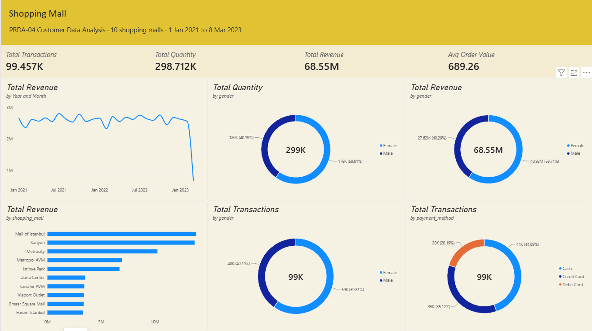

Customer Data Analysis: who shops in 10 Istanbul malls, and what they spend.
I analysed 99,457 transactions from January 2021 to March 2023, answered 10 business questions about gender, age, categories and payment, built the dashboard in Power BI and Tableau, and gave the company nine suggestions.
Who are the customers, what do they buy, and how do they pay?
The company runs 10 shopping malls in Istanbul. It wanted to know which customer groups bring the most sales and revenue, and how to use that in its marketing. The brief had 11 tasks, grouped into four themes plus a dashboard.
Gender
Purchases, items sold and revenue for female and male customers.
Age
The same three measures across five age groups from 18 to 69.
Categories
How the eight product categories spread across every other column.
Payment
Payment method mix, its link to other columns, and the final dashboard.
One table, ten columns, and one trap in the price column.
The data came from the MySQL table project_customer_segmentation.customer. Each row is one transaction. I downloaded all 99,457 rows (MySQL Workbench's 1,000-row limit switched off) and checked them before building anything.
Price is already the transaction total.
The brief describes price as the price per unit, but one Clothing item costs 300.08 TL and a 5-item Clothing purchase is recorded as 1,500.40 TL. Multiplying quantity × price would count quantity twice.
| Column | Meaning |
|---|---|
| invoice_no | Unique invoice number (I + 6 digits) |
| customer_id | Customer number (C + 6 digits) |
| gender | Female or Male |
| age | 18 to 69 |
| category | 8 product categories |
| quantity | 1 to 5 items per transaction |
| price | Amount paid in TL (the transaction total) |
| payment_method | Cash, Credit Card or Debit Card |
| invoice_date | Date of the transaction |
| shopping_mall | One of 10 malls |
| Check | Result and action |
|---|---|
| Missing values | None in any column. No action needed. |
| Duplicates | No duplicate rows or invoice numbers. |
| Data types | Dates, numbers and text read correctly; confirmed in Power Query. |
| Price column | One unit price per category, and price = quantity × unit price. Used price directly as Revenue. |
| Customer ID | Every customer appears once, so I counted transactions, not repeat customers. |
| Date range | March 2023 has only 8 days. Noted on the monthly trend chart. |
-- Columns Revenue = customer[price] -- already the transaction total Unit Price = DIVIDE(customer[Revenue], customer[quantity]) Age Group = 18-29 · 30-39 · 40-49 · 50-59 · 60-69 Year, Month = from invoice_date, for the trend chart -- Measures Total Transactions = COUNTROWS(customer) Total Quantity = SUM(customer[quantity]) Total Revenue = SUM(customer[Revenue]) Avg Order Value = DIVIDE([Total Revenue], [Total Transactions])
Three pages in Power BI, rebuilt in Tableau.
The Power BI report covers the overview, age and category, and payment relations. I then rebuilt the dashboard in Tableau. Pick a page to see the screen and what it shows.

- 99.46K transactions, 298.71K items, 68.55M TL revenue, 689 TL average order.
- Monthly revenue stays near 2.6M TL; the drop at the end is March 2023, which has only 8 days.
- Donuts show the 60 / 40 female–male split on items, revenue and transactions, and the 45 / 35 / 20 payment mix.

- 18-29 leads on transactions, items and revenue because it covers 12 ages.
- Clothing leads on revenue (31.08M TL), followed by Shoes and Technology.
- Category by gender shows every category is about 60% female.

- Payment method by gender, age group, mall and category.
- The cash / credit / debit split looks the same in every bar.
- The matrix gives exact transaction counts by age group and category.

- The same KPIs rebuilt in Tableau: 689 TL average order, 99,457 customers, 68.55M TL.
- Age group and gender against transactions, quantity and revenue.
- Category totals, payment mix by age group and payment mix by mall.

- Payment method by gender and by category.
- Mall of Istanbul (13.85M TL) and Kanyon (13.71M TL) lead revenue.
- A pie chart of the overall payment split.
Customer groups behave alike. Revenue depends on a few categories and malls.
Monthly revenue held steady at about 2.6M TL, and 2022 (31.37M TL) almost matched 2021 (31.32M TL). February dips slightly every year.
Women make 6 in 10 purchases
Women made 59,482 transactions, bought 178,659 items and spent 40.93M TL. Their average order is the same as men’s (688 vs 691 TL): there are simply more female shoppers.
All ages shop about equally
Every single age from 18 to 69 has 1,830–2,057 transactions. The 18-29 group leads (23,043 purchases, 15.83M TL) only because it covers 12 ages instead of 10.
Three categories bring the revenue
Clothing (31.08M TL), Shoes (18.14M TL) and Technology (15.77M TL). Food & Beverage is 15% of purchases but 0.3% of revenue: one item costs 5.23 TL against 1,050 TL for Technology.
Everyone pays the same way
Cash, credit and debit split the same way for every gender, age group, category and mall, within about 1.5 points. Average order is 687–691 TL for each method.
| Age group | Clothing | Cosmetics | Food & Bev. | Shoes | Toys | Books | Souvenir | Tech |
|---|---|---|---|---|---|---|---|---|
| 18-29 | 34.9% | 14.8% | 14.7% | 10.2% | 10.4% | 5.0% | 5.0% | 4.9% |
| 30-39 | 34.4% | 15.3% | 15.2% | 9.9% | 10.0% | 4.9% | 5.1% | 5.3% |
| 40-49 | 34.9% | 15.2% | 14.7% | 10.1% | 10.1% | 4.9% | 5.0% | 5.1% |
| 50-59 | 34.5% | 15.5% | 14.8% | 10.1% | 10.1% | 5.2% | 5.0% | 4.8% |
| 60-69 | 34.7% | 15.2% | 14.8% | 10.2% | 10.1% | 5.0% | 5.0% | 5.0% |
Each category’s share changes by less than 1 point between age groups. Every category is 58–60% female, and Clothing is 34–35% of purchases in every mall.
All 10 questions and answers show table
| Q | Question | Answer |
|---|---|---|
| Q1 | Shopping distribution by gender | Female 59,482 (59.8%), male 39,975 (40.2%). Women make 6 of every 10 purchases. |
| Q2 | Which gender bought more products? | Women: 178,659 items vs 120,053. Both buy about 3 items per transaction. |
| Q3 | Which gender generated more revenue? | Women: 40.93M TL (59.7%) vs 27.62M TL. Average order 688 vs 691 TL. |
| Q4 | Purchase categories vs other columns | Clothing is 34.7% of transactions and 45.3% of revenue. The category mix does not change with gender, age, payment or mall. |
| Q5 | Shopping distribution by age | 18-29: 23,043; other groups about 19,000 each. Even across ages once group width is allowed for. |
| Q6 | Which age group bought more products? | 18-29: 69,245 items, because it covers 12 ages. Per year of age, all groups are similar. |
| Q7 | Which age group generated more revenue? | 18-29: 15.83M TL. Average order is 683–698 TL in every group. |
| Q8 | Purchase categories vs other columns | Every age group buys the same mix within 1 point (see table above). |
| Q9 | Does payment method relate to other columns? | No. About 45% cash, 35% credit and 20% debit in every group, within 1.5 points. |
| Q10 | Distribution of payment method | Cash 44,447 (44.7%), credit card 34,931 (35.1%), debit card 20,079 (20.2%). |
Nine suggestions for the company.
Protect the high-value categories and malls, grow the male customer base, and start collecting the data that would show repeat customers.
| # | Suggestion | Why |
|---|---|---|
| 1 | Focus on the high-value categoriesKeep Clothing, Shoes and Technology well stocked, give them the best space, run promotions on them. Revenue | They bring 95% of revenue. |
| 2 | Use low-price categories to bring people inBundles or vouchers that lead from Food & Beverage and Cosmetics to Clothing and Shoes. Cross-sell | They are bought often but earn little. |
| 3 | Grow the male customer baseCampaigns aimed at men. Marketing | Men are 40% of shoppers but spend as much per order as women. |
| 4 | Keep marketing broad across agesUse age to choose the channel, such as social media for younger shoppers, not the offer. Marketing | All ages shop and spend the same. |
| 5 | Start a loyalty programmeA card or app that tracks repeat visits and allows personal offers. Retention | Customers can’t be followed over time, and 45% pay in anonymous cash. |
| 6 | Encourage card and digital paymentsSmall card or app rewards. Operations | Faster checkout and better customer data; cards are already 55%. |
| 7 | Learn from the top mallsStudy Mall of Istanbul and Kanyon (brands, location, events) and apply it to the five smaller malls. Revenue | Two malls bring 40% of revenue; five bring about 3.4M TL each. |
| 8 | Plan for FebruaryA seasonal campaign to fill the gap. Marketing | Revenue dips slightly every February. |
| 9 | Improve the dataCorrect the price column description and keep adding data after March 2023. Data | Price is a total, not a unit price; trends need newer data. |
What the data can’t tell us yet.
The 10 malls made 99,457 sales worth 68.55M TL. Women make about 60% of purchases, all ages shop alike, and revenue depends on three categories and two malls.
- Every customer_id appears once, so repeat-customer behaviour can’t be measured.
- March 2023 has only 8 days, so its low revenue is not a real drop.
- The brief’s description of price is wrong: it is the transaction total.
- Age groups differ in width: 18-29 covers 12 ages, the others 10.
- Protect and grow Clothing, Shoes and Technology.
- Attract more male shoppers, who spend as much per order.
- Use low-price categories to drive cross-selling.
- Introduce a loyalty programme to understand and keep customers.
Everything behind this page.
The brief, the data, the dashboards, the report and the presentation, in the order the project was done.